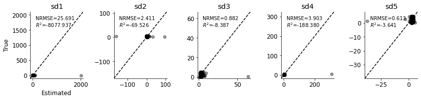
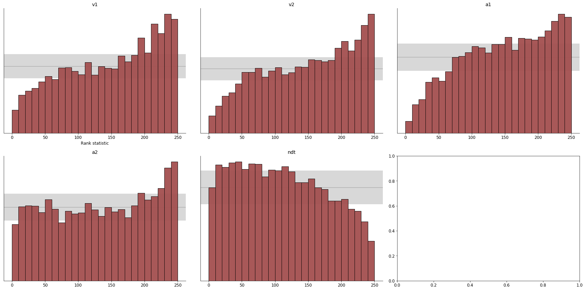
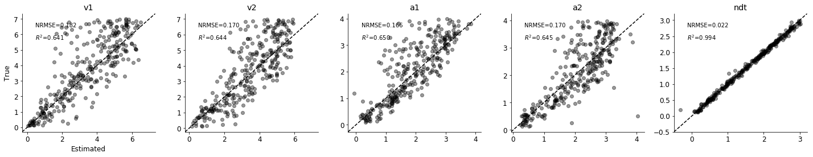

Meta Workflow¶
[1]:
import os, sys
sys.path.append(os.path.abspath(os.path.join('../..')))
import numpy as np
import matplotlib.pyplot as plt
import seaborn as sns
import pandas as pd
from sklearn.metrics import r2_score
from scipy import stats
from numba import njit
import tensorflow as tf
from tensorflow.keras.models import Sequential
from tensorflow.keras.layers import Dense
from bayesflow.trainers import MetaTrainer
from bayesflow.losses import kl_latent_space
from bayesflow.diagnostics import true_vs_estimated
from bayesflow.networks import Permutation
from bayesflow.models import GenerativeModel
[2]:
%load_ext autoreload
%autoreload 2
Simulator settings¶
[3]:
def model_prior(batch_size, n_models, p_vals=None):
"""
Samples from the models' prior batch size times and converts to one-hot.
Assumes equal model priors.
----------
Arguments:
batch_size : int -- the number of samples to draw from the prior
----------
Returns:
m_true : np.ndarray of shape (batch_size, theta_dim) -- the samples batch of parameters
"""
# Equal priors, if nothign specified
if p_vals is None:
p_vals = [1/n_models] * n_models
m_idx = np.random.choice(n_models, size=batch_size, p=p_vals).astype(np.int32)
return m_idx
[4]:
class TPrior:
def __init__(self, theta_dim, mu_scale, scale_scale):
self.theta_dim = theta_dim
self.prior_mu = stats.multivariate_normal(np.zeros(self.theta_dim), mu_scale * np.eye(self.theta_dim))
self.prior_scale = stats.uniform(0, scale_scale)
def __call__(self, batch_size):
"""
Returns a sample from the prior.
"""
mu_samples = self.prior_mu.rvs(batch_size)
if batch_size == 1:
mu_samples = mu_samples[np.newaxis]
scale_samples = self.prior_scale.rvs((batch_size, self.theta_dim))
return np.c_[mu_samples, scale_samples].astype(np.float32)
[5]:
class MultivariateT:
def __init__(self, df=10, seed=42):
self.df = df
self.seed = seed
def simulate_data(self, p_sample, n_obs):
"""
Returns a dataset given a sample from the prior.
"""
D = p_sample.shape[0] // 2
mu, sd = p_sample[:D], p_sample[D:]
x = stats.multivariate_t(loc = mu, shape = np.diag(sd), df = self.df).rvs(n_obs)
return x
def generate_multiple_datasets(self, p_samples, n_obs):
""" Generates multiple datasets through BayesianMultivariateT.generate_data() """
batch_size = p_samples.shape[0]
theta_dim = p_samples.shape[1] // 2
x = np.zeros((batch_size, n_obs, theta_dim))
for bi in range(batch_size):
x[bi] = self.simulate_data(p_samples[bi], n_obs)
return x.astype(np.float32)
def __call__(self, p_samples, n_obs=100):
"""
Makes instances of the class callable.
"""
return self.generate_multiple_datasets(p_samples, n_obs)
An example Bayesian workflow (with BayesFlow)¶
Towards a principled Bayesian workflow for cognitive modeling:
https://betanalpha.github.io/assets/case_studies/principled_bayesian_workflow.html
https://arxiv.org/abs/1904.12765
Prior predictive checks¶
[6]:
class InvariantCouplingNet(tf.keras.Model):
"""Implements a conditional version of a sequential network."""
def __init__(self, meta, n_out):
"""
Creates a conditional coupling net (FC neural network).
----------
Arguments:
meta : list -- a list of dictionaries, wherein each dictionary holds parameter - value pairs for a single
tf.keras.Dense layer.
n_out : int -- number of outputs of the coupling net
"""
super(InvariantCouplingNet, self).__init__()
self.h1 = Sequential([Dense(**meta['dense_h1_args']) for _ in range(meta['n_dense_h1'])])
self.h2 = Sequential(
[Dense(**meta['dense_h2_args']) for _ in range(meta['n_dense_h2'])] +
[Dense(n_out)]
)
def call(self, m, params, x):
"""
Concatenates x and y and performs a forward pass through the coupling net.
Arguments:
m : tf.Tensor of shape (batch_size, n_models) -- the one-hot-encoded model indices
params : tf.Tensor of shape (batch_size, theta_dim) -- the parameters theta ~ p(theta) of interest
x : tf.Tensor of shape (batch_size, n_obs, inp_dim) -- the conditional data of interest x
"""
N = int(x.shape[1])
params_rep = tf.stack([params] * N, axis=1)
m_rep = tf.stack([m] * N, axis=1)
x_params_m = tf.concat([x, params_rep, m_rep], axis=-1)
rep = tf.reduce_mean(self.h1(x_params_m), axis=1)
rep_params_m = tf.concat([rep, params, m], axis=-1)
out = self.h2(rep_params_m)
return out
[7]:
class ConditionalCouplingLayer(tf.keras.Model):
"""Implements a conditional version of the INN block."""
def __init__(self, meta):
"""
Creates a conditional invertible block.
----------
Arguments:
meta : list -- a list of dictionaries, wherein each dictionary holds parameter - value pairs for a single
tf.keras.Dense layer. All coupling nets are assumed to be equal.
"""
super(ConditionalCouplingLayer, self).__init__()
self.alpha = meta['alpha']
theta_dim = meta['n_params']
self.n_out1 = theta_dim // 2
self.n_out2 = theta_dim // 2 if theta_dim % 2 == 0 else theta_dim // 2 + 1
if meta['permute']:
self.permutation = Permutation(theta_dim)
else:
self.permutation = None
self.s1 = InvariantCouplingNet(meta['s_args'], self.n_out1)
self.t1 = InvariantCouplingNet(meta['t_args'], self.n_out1)
self.s2 = InvariantCouplingNet(meta['s_args'], self.n_out2)
self.t2 = InvariantCouplingNet(meta['t_args'], self.n_out2)
def call(self, m, params, x, inverse=False, log_det_J=True):
"""
Implements both directions of a conditional invertible block.
----------
Arguments:
m : tf.Tensor of shape (batch_size, n_models) -- the one-hot-encoded model indices
theta : tf.Tensor of shape (batch_size, theta_dim) -- the parameters theta ~ p(theta|y) of interest
x : tf.Tensor of shape (batch_size, summary_dim) -- the summarized conditional data of interest x = sum(x)
inverse : bool -- flag indicating whether to tun the block forward or backwards
log_det_J : bool -- flag indicating whether to return the log determinant of the Jacobian matrix
----------
Returns:
(v, log_det_J) : (tf.Tensor of shape (batch_size, inp_dim), tf.Tensor of shape (batch_size, )) --
the transformed input, if inverse = False, and the corresponding Jacobian of the transformation
if inverse = False
u : tf.Tensor of shape (batch_size, inp_dim) -- the transformed out, if inverse = True
"""
# --- Forward pass --- #
if not inverse:
if self.permutation is not None:
params = self.permutation(params)
u1, u2 = tf.split(params, [self.n_out1, self.n_out2], axis=-1)
# Pre-compute network outputs for v1
s1 = self.s1(m, u2, x)
# Clamp s1 if specified
if self.alpha is not None:
s1 = (2. * self.alpha / np.pi) * tf.math.atan(s1 / self.alpha)
t1 = self.t1(m, u2, x)
v1 = u1 * tf.exp(s1) + t1
# Pre-compute network outputs for v2
s2 = self.s2(m, v1, x)
# Clamp s2 if specified
if self.alpha is not None:
s2 = (2. * self.alpha / np.pi) * tf.math.atan(s2 / self.alpha)
t2 = self.t2(m, v1, x)
v2 = u2 * tf.exp(s2) + t2
v = tf.concat((v1, v2), axis=-1)
if log_det_J:
# log|J| = log(prod(diag(J))) -> according to inv architecture
return v, tf.reduce_sum(s1, axis=-1) + tf.reduce_sum(s2, axis=-1)
return v
# --- Inverse pass --- #
else:
v1, v2 = tf.split(params, [self.n_out1, self.n_out2], axis=-1)
# Pre-Compute s2
s2 = self.s2(m, v1, x)
# Clamp s2 if specified
if self.alpha is not None:
s2 = (2. * self.alpha / np.pi) * tf.math.atan(s2 / self.alpha)
u2 = (v2 - self.t2(m, v1, x)) * tf.exp(-s2)
# Pre-Compute s1
s1 = self.s1(m, u2, x)
# Clamp s1 if specified
if self.alpha is not None:
s1 = (2. * self.alpha / np.pi) * tf.math.atan(s1 / self.alpha)
u1 = (v1 - self.t1(m, u2, x)) * tf.exp(-s1)
u = tf.concat((u1, u2), axis=-1)
if self.permutation is not None:
u = self.permutation(u, inverse=True)
return u
class InvariantBayesFlow(tf.keras.Model):
"""Implements a chain of conditional invertible blocks for Bayesian parameter inference."""
def __init__(self, meta):
"""
Creates a chain of cINN blocks and chains operations.
----------
Arguments:
meta : list -- a list of dictionary, where each dictionary holds parameter - value pairs for a single
keras.Dense layer
"""
super(InvariantBayesFlow, self).__init__()
self.cINNs = [ConditionalCouplingLayer(meta) for _ in range(meta['n_coupling_layers'])]
self.z_dim = meta['n_params']
self.n_models = meta['n_models']
def call(self, m, params, x, inverse=False):
"""
Performs one pass through an invertible chain (either inverse or forward).
----------
Arguments:
m : tf.Tensor of shape (batch_size, n_models) -- the one-hot-encoded model indices
params : tf.Tensor of shape (batch_size, inp_dim) -- the parameters theta ~ p(theta|x) of interest
x : tf.Tensor of shape (batch_size, summary_dim) -- the conditional data x
inverse : bool -- flag indicating whether to tun the chain forward or backwards
----------
Returns:
(z, log_det_J) : (tf.Tensor of shape (batch_size, inp_dim), tf.Tensor of shape (batch_size, )) --
the transformed input, if inverse = False, and the corresponding Jacobian of the transformation
if inverse = False
x : tf.Tensor of shape (batch_size, inp_dim) -- the transformed out, if inverse = True
"""
if inverse:
return self.inverse(m, params, x)
else:
return self.forward(m, params, x)
def forward(self, m, params, x):
"""Performs a forward pass though the chain."""
z = params
log_det_Js = []
for cINN in self.cINNs:
z, log_det_J = cINN(m, z, x)
log_det_Js.append(log_det_J)
# Sum Jacobian determinants for all blocks to obtain total Jacobian.
log_det_J = tf.add_n(log_det_Js)
return z, log_det_J
def inverse(self, m, z, x):
"""Performs a reverse pass through the chain."""
params = z
for cINN in reversed(self.cINNs):
params = cINN(m, params, x, inverse=True)
return params
def sample(self, x, m, n_samples, to_numpy=True):
"""
Samples from the inverse model given a single instance x.
----------
Arguments:
x : tf.Tensor of shape (n_obs, x_dim) -- the conditioning data of interest
m : int - the integer model index
n_samples : int -- number of samples to obtain from the approximate posterior
to_numpy : bool -- flag indicating whether to return the samples as a np.array or a tf.Tensor
----------
Returns:
theta_samples : 3D tf.Tensor or np.array of shape (n_samples, n_batch, theta_dim)
"""
# Represent model index
m_oh = tf.stack([tf.keras.utils.to_categorical(m, self.n_models)] * n_samples, axis=0)
# Sample in parallel
z_normal_samples = tf.random.normal(shape=(n_samples, self.z_dim), dtype=tf.float32)
theta_samples = self.inverse(m_oh, z_normal_samples, tf.stack([x] * n_samples, axis=0))
if to_numpy:
return theta_samples.numpy()
return theta_samples
Train amortized estimator¶
D = 10, J = 10¶
[30]:
D = 10
J = 10
bf_meta = {
'n_coupling_layers': 4,
's_args': {
'n_dense_h1': 2,
'n_dense_h2': 2,
'dense_h1_args': {'units': 64, 'activation': 'relu', 'kernel_initializer': 'glorot_uniform'},
'dense_h2_args': {'units': 64, 'activation': 'elu', 'kernel_initializer': 'glorot_uniform'},
},
't_args': {
'n_dense_h1': 2,
'n_dense_h2': 2,
'dense_h1_args': {'units': 64, 'activation': 'relu', 'kernel_initializer': 'glorot_uniform'},
'dense_h2_args': {'units': 64, 'activation': 'elu', 'kernel_initializer': 'glorot_uniform'},
},
'n_params': D,
'n_models': J,
'alpha': 1.9,
'permute': True
}
mu_scale = 0.1
scale_scale = 1.0
df = 10
prior = TPrior(D//2, mu_scale, scale_scale)
[31]:
priors = [prior] * J
simulators = [MultivariateT(df) for df in np.arange(1, J+1, 1)]
generative_model = GenerativeModel(model_prior, priors, simulators)
[32]:
meta_amortizer = InvariantBayesFlow(bf_meta)
[33]:
# Generate some training data
m_indices, params_m, sim_data = generative_model(n_sim=20000, n_obs=100)
[35]:
sim_data.max()
[35]:
95179.49
[17]:
# Create a trainer instance
trainer = MetaTrainer(meta_amortizer,
generative_model,
checkpoint_path='meta',
learning_rate=0.0001)
Initializing networks from scratch.
Offline training¶
[19]:
# # %%time
# losses = trainer.train_offline(10, 32, m_indices, params_m, sim_data)
[22]:
# Generate some training data
n_val = 250
m_indices_val, params_m_val, sim_data_val = generative_model(n_sim=n_val, n_obs=100)
[23]:
# Sample posterior for each test data set, otherwise GPU memory blows
# when attempted in parallel for all test sets
samples = []
for i in range(n_val):
samples.append(meta_amortizer.sample(sim_data_val[i], m_indices_val[i].argmax(), n_samples=1000).mean(0))
samples = np.array(samples)
[24]:
# param_means = samples.mean(axis=0)
true_vs_estimated(params_m_val[:, :5],
samples[:, :5],
['mu{}'.format(i) for i in range(1, 6)], figsize=(12, 3))

[25]:
# param_means = samples.mean(axis=0)
true_vs_estimated(params_m_val[:, 5:],
samples[:, 5:],
['sd{}'.format(i) for i in range(1, 6)], figsize=(12, 3))

D = 100, J = 10¶
[72]:
D = 100
J = 10
bf_meta = {
'n_coupling_layers': 4,
's_args': {
'n_dense_h1': 2,
'n_dense_h2': 3,
'dense_h1_args': {'units': 64, 'activation': 'relu', 'kernel_initializer': 'glorot_uniform'},
'dense_h2_args': {'units': 128, 'activation': 'relu', 'kernel_initializer': 'glorot_uniform'},
},
't_args': {
'n_dense_h1': 2,
'n_dense_h2': 3,
'dense_h1_args': {'units': 64, 'activation': 'relu', 'kernel_initializer': 'glorot_uniform'},
'dense_h2_args': {'units': 128, 'activation': 'relu', 'kernel_initializer': 'glorot_uniform'},
},
'n_params': D,
'n_models': J,
'alpha': 1.9,
'permute': True
}
mu_scale = 1.0
scale_scale = 5.0
df = 10
prior = TPrior(D//2, mu_scale, scale_scale)
[73]:
priors = [prior] * J
simulators = [MultivariateT(df) for df in np.arange(1, J+1, 1)]
[74]:
generative_model = GenerativeModel(model_prior, priors, simulators)
[75]:
meta_amortizer = InvariantBayesFlow(bf_meta)
[63]:
# Generate some training data
m_indices, params_m, sim_data = generative_model(n_sim=20000, n_obs=100)
[76]:
# Create a trainer instance
trainer = MetaTrainer(meta_amortizer,
generative_model,
loss=kl_latent_space,
checkpoint_path='meta5',
learning_rate=0.0001)
Initializing networks from scratch.
[77]:
# %%time
losses = trainer.train_offline(25, 32, m_indices, params_m, sim_data)
Converting 20000 simulations to a TensorFlow data set...
---------------------------------------------------------------------------
KeyboardInterrupt Traceback (most recent call last)
<ipython-input-77-ba12d72aea3b> in <module>
1 # %%time
----> 2 losses = trainer.train_offline(25, 32, m_indices, params_m, sim_data)
~\Desktop\Projects\BayesFlow\experimental\trainers.py in train_offline(self, epochs, batch_size, model_indices, params, sim_data)
157
158 # One step backprop
--> 159 loss = self._train_step(model_indices_b, params_b, sim_data_b)
160
161 # Store loss and update progress bar
~\Desktop\Projects\BayesFlow\experimental\trainers.py in _train_step(self, model_indices, params, sim_data)
311 # One step backprop
312 gradients = tape.gradient(loss, self.network.trainable_variables)
--> 313 self._apply_gradients(gradients, self.network.trainable_variables)
314
315 return loss.numpy()
~\Desktop\Projects\BayesFlow\experimental\trainers.py in _apply_gradients(self, gradients, tensors)
328 if self.clip_value is not None:
329 gradients = clip_gradients(gradients, clip_value=self.clip_value, clip_method=self.clip_method)
--> 330 self.optimizer.apply_gradients(zip(gradients, tensors))
d:\anaconda3\envs\tensorflowdev\lib\site-packages\tensorflow\python\keras\optimizer_v2\optimizer_v2.py in apply_gradients(self, grads_and_vars, name, experimental_aggregate_gradients)
623 "ParameterServerStrategy and CentralStorageStrategy")
624
--> 625 apply_state = self._prepare(var_list)
626 if experimental_aggregate_gradients:
627 grads_and_vars = self._transform_unaggregated_gradients(grads_and_vars)
d:\anaconda3\envs\tensorflowdev\lib\site-packages\tensorflow\python\keras\optimizer_v2\optimizer_v2.py in _prepare(self, var_list)
878 apply_state[(var_device, var_dtype)] = {}
879 with ops.device(var_device):
--> 880 self._prepare_local(var_device, var_dtype, apply_state)
881
882 return apply_state
d:\anaconda3\envs\tensorflowdev\lib\site-packages\tensorflow\python\keras\optimizer_v2\adam.py in _prepare_local(self, var_device, var_dtype, apply_state)
133
134 def _prepare_local(self, var_device, var_dtype, apply_state):
--> 135 super(Adam, self)._prepare_local(var_device, var_dtype, apply_state)
136
137 local_step = math_ops.cast(self.iterations + 1, var_dtype)
d:\anaconda3\envs\tensorflowdev\lib\site-packages\tensorflow\python\keras\optimizer_v2\optimizer_v2.py in _prepare_local(self, var_device, var_dtype, apply_state)
884 def _prepare_local(self, var_device, var_dtype, apply_state):
885 if "learning_rate" in self._hyper:
--> 886 lr_t = array_ops.identity(self._decayed_lr(var_dtype))
887 apply_state[(var_device, var_dtype)]["lr_t"] = lr_t
888
d:\anaconda3\envs\tensorflowdev\lib\site-packages\tensorflow\python\util\dispatch.py in wrapper(*args, **kwargs)
199 """Call target, and fall back on dispatchers if there is a TypeError."""
200 try:
--> 201 return target(*args, **kwargs)
202 except (TypeError, ValueError):
203 # Note: convert_to_eager_tensor currently raises a ValueError, not a
d:\anaconda3\envs\tensorflowdev\lib\site-packages\tensorflow\python\ops\array_ops.py in identity(input, name)
284 # Make sure we get an input with handle data attached from resource
285 # variables. Variables have correct handle data when graph building.
--> 286 input = ops.convert_to_tensor(input)
287 ret = gen_array_ops.identity(input, name=name)
288 # Propagate handle data for happier shape inference for resource variables.
d:\anaconda3\envs\tensorflowdev\lib\site-packages\tensorflow\python\profiler\trace.py in wrapped(*args, **kwargs)
161 with Trace(trace_name, **trace_kwargs):
162 return func(*args, **kwargs)
--> 163 return func(*args, **kwargs)
164
165 return wrapped
d:\anaconda3\envs\tensorflowdev\lib\site-packages\tensorflow\python\framework\ops.py in convert_to_tensor(value, dtype, name, as_ref, preferred_dtype, dtype_hint, ctx, accepted_result_types)
1538
1539 if ret is None:
-> 1540 ret = conversion_func(value, dtype=dtype, name=name, as_ref=as_ref)
1541
1542 if ret is NotImplemented:
d:\anaconda3\envs\tensorflowdev\lib\site-packages\tensorflow\python\ops\resource_variable_ops.py in _dense_var_to_tensor(var, dtype, name, as_ref)
1990
1991 def _dense_var_to_tensor(var, dtype=None, name=None, as_ref=False):
-> 1992 return var._dense_var_to_tensor(dtype=dtype, name=name, as_ref=as_ref) # pylint: disable=protected-access
1993
1994
d:\anaconda3\envs\tensorflowdev\lib\site-packages\tensorflow\python\ops\resource_variable_ops.py in _dense_var_to_tensor(***failed resolving arguments***)
1391 return self.read_value().op.inputs[0]
1392 else:
-> 1393 return self.value()
1394
1395 def __iadd__(self, unused_other):
d:\anaconda3\envs\tensorflowdev\lib\site-packages\tensorflow\python\ops\resource_variable_ops.py in value(self)
563 return self._cached_value
564 with ops.colocate_with(None, ignore_existing=True):
--> 565 return self._read_variable_op()
566
567 def _as_graph_element(self):
d:\anaconda3\envs\tensorflowdev\lib\site-packages\tensorflow\python\ops\resource_variable_ops.py in _read_variable_op(self)
670 result = read_and_set_handle()
671 else:
--> 672 result = read_and_set_handle()
673
674 if not context.executing_eagerly():
d:\anaconda3\envs\tensorflowdev\lib\site-packages\tensorflow\python\ops\resource_variable_ops.py in read_and_set_handle()
661 def read_and_set_handle():
662 result = gen_resource_variable_ops.read_variable_op(
--> 663 self._handle, self._dtype)
664 _maybe_set_handle_data(self._dtype, self._handle, result)
665 return result
d:\anaconda3\envs\tensorflowdev\lib\site-packages\tensorflow\python\ops\gen_resource_variable_ops.py in read_variable_op(resource, dtype, name)
468 try:
469 _result = pywrap_tfe.TFE_Py_FastPathExecute(
--> 470 _ctx, "ReadVariableOp", name, resource, "dtype", dtype)
471 return _result
472 except _core._NotOkStatusException as e:
KeyboardInterrupt:
[78]:
# Generate some training data
m_indices_val, params_m_val, sim_data_val = generative_model(n_sim=250, n_obs=100)
# Sample posterior for each test data set, otherwise GPU memory blows
# when attempted in parallel for all test sets
samples = []
for i in range(250):
samples.append(meta_amortizer.sample(sim_data_val[i], m_indices_val[i].argmax(), n_samples=1000).mean(0))
samples = np.array(samples)
[ ]:
# param_means = samples.mean(axis=0)
true_vs_estimated(params_m_val[:, :50],
samples[:, :50],
['mu{}'.format(i) for i in range(1, 6)], figsize=(20, 16))
[ ]:
Compuational faithfulness¶
(Via simulation-based calibration)
[50]:
n_sbc = 5000
n_post_samples_sbc = 250
params_sbc = prior(n_sbc)
x_sbc = batch_simulator(params_sbc)
param_samples = np.concatenate([bayes_flow.sample(x, n_post_samples_sbc)
for x in tf.split(x_sbc, 10, axis=0)], axis=1)
[52]:
plot_sbc(param_samples, params_sbc, param_names=['v1', 'v2', 'a1', 'a2', 'ndt'])

Model sensitivity/adequacy¶
Quick and dirty¶
[49]:
# Validate (quick and dirty)
true_params = prior(300)
x = batch_simulator(true_params).astype(np.float32)
param_samples = bayes_flow.sample(x, n_samples=1000)
param_means = param_samples.mean(axis=0)
true_vs_estimated(true_params, param_means, ['v1', 'v2', 'a1', 'a2','ndt'])

A Bayesian eyechart¶
[ ]:
# Simulate
n_sim_s = 500
n_samples_posterior = 1000
true_params = prior(n_sim_s)
x = batch_simulator(true_params)
# Sample from posterior
param_samples = bayes_flow.sample(x, n_samples_posterior)
### Posterior z-score
# Compute posterior means and stds
post_means = param_samples.mean(0)
post_stds = param_samples.std(0)
post_vars = param_samples.var(0)
# Compute posterior z score
post_z_score = (post_means - true_params) / post_stds
### Posterior contraction, i.e., 1 - post_var / prior_var
prior_a = (0.1, 0.1, 0.1, 0.1, 0.1) # lower bound of uniform prior
prior_b = (7.0, 7.0, 4.0, 4.0, 3.0) # upper bound of uniform prior
# Compute prior vars analytically
prior_vars = np.array([(b-a)**2/12 for a,b in zip(prior_a, prior_b)])
post_cont = 1 - post_vars / prior_vars
# Plotting time
f, axarr = plt.subplots(2, 3, figsize=(12, 6))
for i, (p, ax) in enumerate(zip(param_names, axarr.flat)):
ax.scatter(post_cont[:, i], post_z_score[:, i], color='#8f2727', alpha=0.7)
ax.set_title(p, fontsize=20)
sns.despine(ax=ax)
ax.set_xlim([-0.1, 1.05])
ax.set_ylim([-3.5, 3.5])
ax.grid(color='black', alpha=0.1)
ax.set_xlabel('Posterior contraction', fontsize=14)
if i == 0 or i == 3:
ax.set_ylabel('Posterior z-score', fontsize=14)
f.tight_layout()
[ ]: